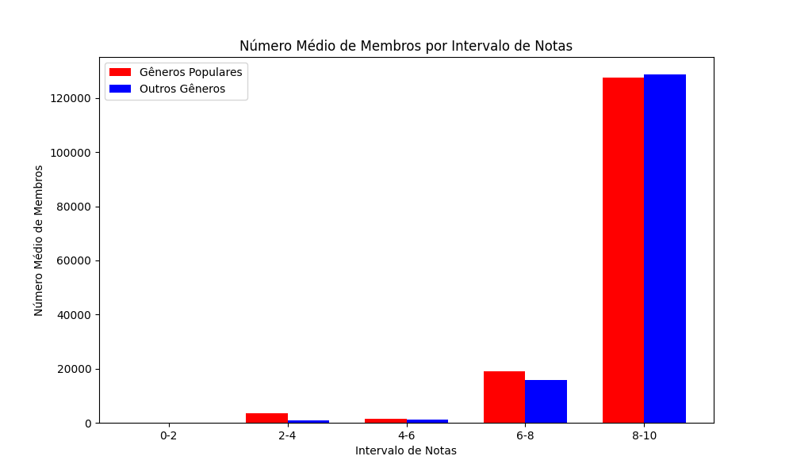
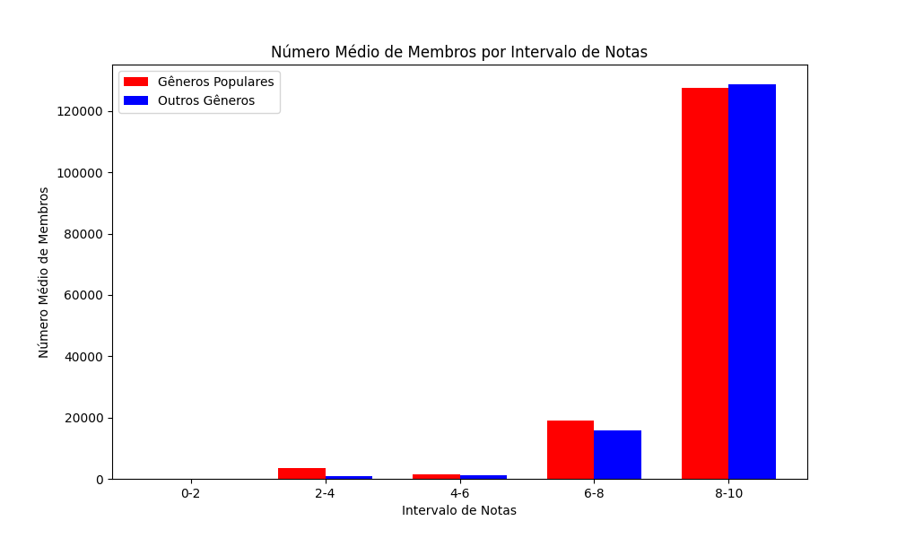
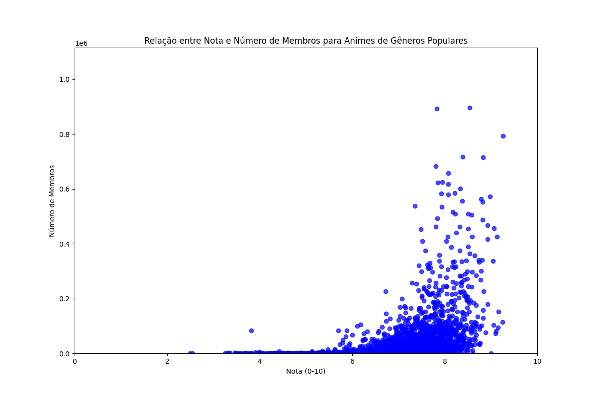
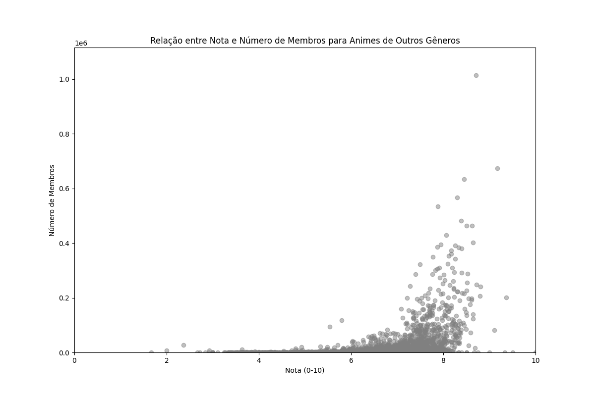
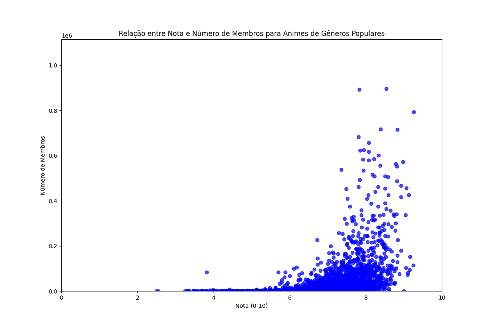
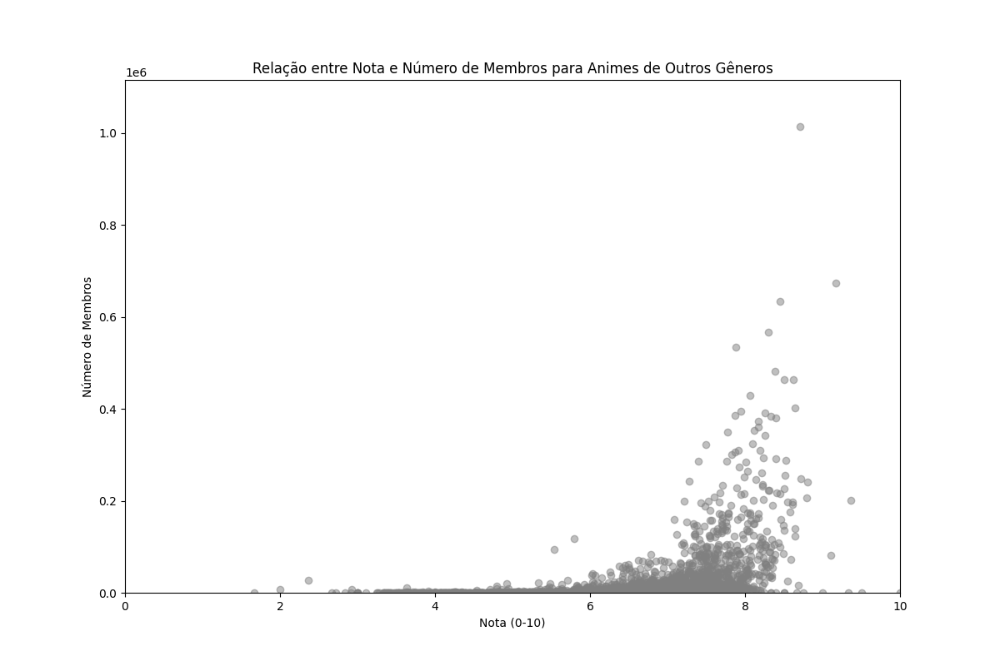

Analise de Dados Animes documentation¶
Animações, filmes e séries são os principais alvos de entretenimento dessa geração. Em particular, os animes são queridos entre muitas pessoas, que apreciam a cultura japonesa. Este trabalho tem como objetivo explorar a base de dados de animes, realizar o pré-processamento necessário, como a limpeza e tratamento de valores ausentes e testar as hipóteses propostas, listadas a seguir:
Hipóteses
Animes com altas notas de recomendação são geralmente de gêneros populares, como ação, aventura, fantasia, luta, esportes, shounen; Animes com mais episódios recebem menos recomendações por exigirem maior comprometimento; Animes lançados recentemente tendem a serem mais populares, com melhores notas e mais membros.
Limpeza de dados
A equipe escolheu três bases de dados, ambas retiradas do Kaggle. Antes de começar a análise de dados, é necessário realizar uma limpeza de dados. Para isso, foram criadas algumas funções que realizam as modificações necessárias.
No arquivo funcoes.py:
A função filtrar_gêneros retira do DataFrame de animes os gêneros que não devem fazer parte da análise, como os gêneros +18; A função convert_data converte uma data no formato MM/DD/YYYY para o formato DD/MM/YYYY; A função adcionar_datas retira uma coluna de datas de um arquivo complementar e, em seguida, a adiciona ao DataFrame de animes; A função preencher_episodios_unknown troca os valores “unknown” por dados de outro DataFrame de animes limpo; A função salvar_anime_csv salva o DataFrame como um arquivo csv; Por fim, a função processar_anime gera a base de dados que será trabalhada, integrando as três bases de dados.
Resultados da Análise Exploratória
 

{kind=link}
 



{kind=link}
{kind=link}
Validação das Hipóteses
Hipótese 1:
Animes com altas notas de recomendação são geralmente de gêneros populares, como ação, aventura, fantasia, luta, esportes, shounen
Análise:
De acordo com os gráficos da relação entre nota e número de membros para animes de gêneros populares e de outros gêneros, o número de membros que avaliou gêneros populares com nota entre 8 e 10 é significativamente maior do que o número de membros que avaliou os outros gêneros com nota entre 8 e 10, embora o número de notas entre 6 e 8 em ambos os gráficos parece ser a mesma.
Considerações finais: de fato, animes populares tendem a ter notas altas de recomendação.
Hipótese 2:
Animes com Mais Episódios Recebem Menos Recomendações por Exigirem Maior Comprometimento
Análise:
Como visto nos dois primeiros gráficos, animes com mais episódios (tome por exemplo 500 episódios ou mais) têm no geral menos de 4 000 membros e no geral têm um “rating” entre 500 e 800 , média de 637 e mediana de 634.
Em contrapartida, animes com 125 episódios ou menos têm um espectro de “rating” bem mais amplo, variando de valores próximos de 0 até valores próximos de 10000, média de 661, mediana de 669 e uma quantidade considerável de animes com mais de 40 000 membros. É possível perceber uma distribuição seguindo a lei de potência no gráfico “Episódios x Membros” que corrobora com a hipótese.
Considerações finais: é possível observar que animes com menos episódios tendem a ser mais populares que animes com muitos episódios (é claro que existem ‘outlines’ como One Piece ou Naruto, mas são exceções à regra).
Hipótese 3:
Animes lançados recentemente tendem a serem mais populares, com melhores notas e mais membros.
De acordo com o gráfico “Ano de Lançamento vs Número de Membros (até 2017)”, a popularidade dos animes lançados recentemente não difere muito da popularidade dos animes mais antigos. Analisando o gráfico “Número Médio de Membros por Intervalo de Lançamento”, o número de membros no intervalo de 2000 até 2010 (recentes) é maior do que o número de membros nos anos anteriores ao ano 2000.
Considerações finais: Apesar de o segundo gráfico indicar que a hipótese está correta, o primeiro gráfico mostra que a diferença entre o número de membros em anos recentes e anos mais antigos é pequena. Assim, essa hipótese não pode ser totalmente comprovada.
Desafios Encontrados
A utilização de três DataSets: A equipe utilizou três DataSets, uma vez que a coluna de episódios do primeiro estava incompleta, e foi preciso completá-la com dados de outros dois DataSets.
Contribuições de cada integrante
Gabriela Barbosa: Ficou responsável por fazer o relatório e analisou a hipótese 1. Vinicius Tavares: Contribuiu com a limpeza dos dados e analisou a hipótese 2. Matheus Mendes: Contribuiu com a limpeza dos dados e analisou a hipótese 3. ====================================== .. Welcome to Your Project’s documentation!
Contents: